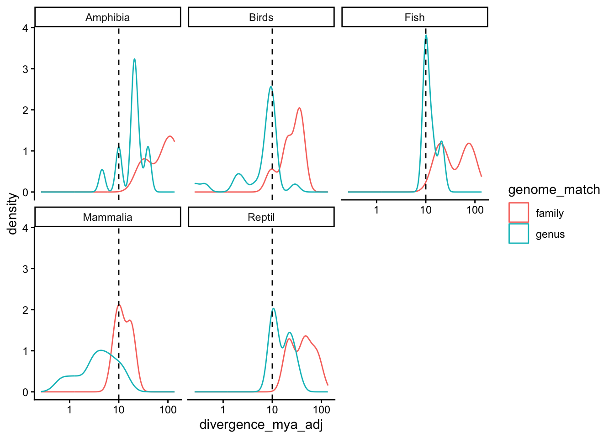
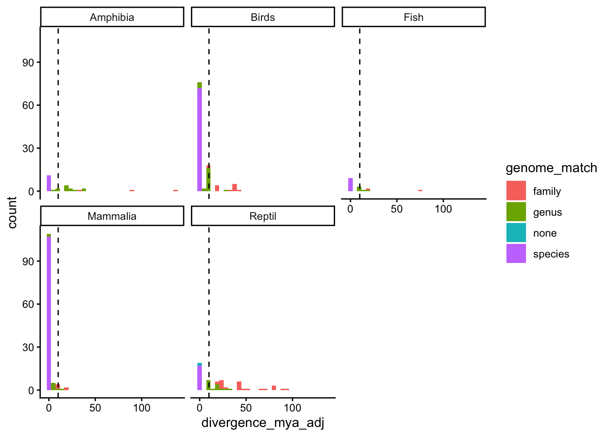
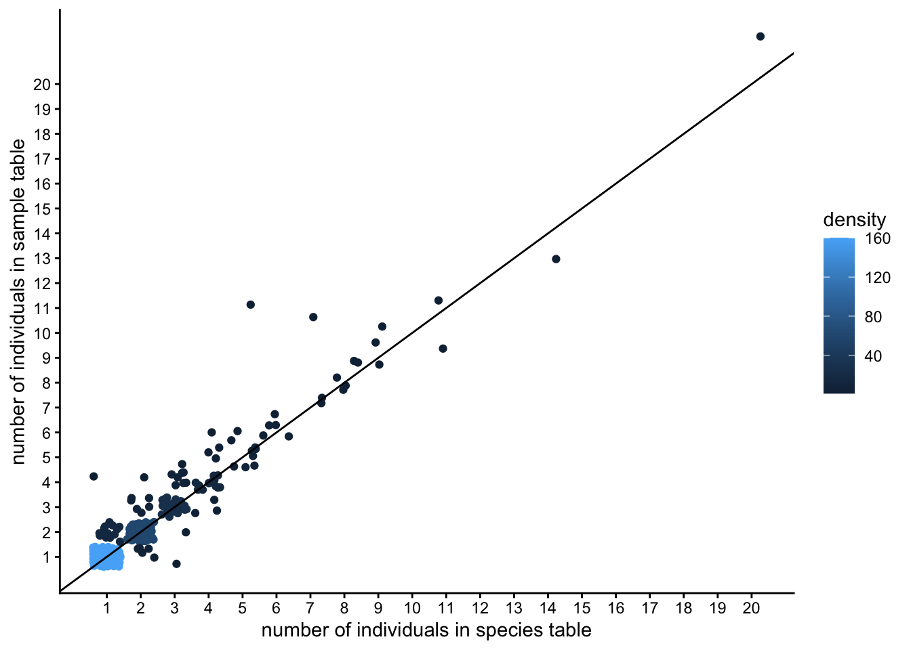

Last updated: 2026-07-09
Checks: 7 0
Knit directory: 1.Species_selection/
This reproducible R Markdown analysis was created with workflowr (version 1.7.2). The Checks tab describes the reproducibility checks that were applied when the results were created. The Past versions tab lists the development history.
Great! Since the R Markdown file has been committed to the Git repository, you know the exact version of the code that produced these results.
Great job! The global environment was empty. Objects defined in the global environment can affect the analysis in your R Markdown file in unknown ways. For reproduciblity it’s best to always run the code in an empty environment.
The command set.seed(20221125) was run prior to running
the code in the R Markdown file. Setting a seed ensures that any results
that rely on randomness, e.g. subsampling or permutations, are
reproducible.
Great job! Recording the operating system, R version, and package versions is critical for reproducibility.
Nice! There were no cached chunks for this analysis, so you can be confident that you successfully produced the results during this run.
Great job! Using relative paths to the files within your workflowr project makes it easier to run your code on other machines.
Great! You are using Git for version control. Tracking code development and connecting the code version to the results is critical for reproducibility.
The results in this page were generated with repository version 55d2eba. See the Past versions tab to see a history of the changes made to the R Markdown and HTML files.
Note that you need to be careful to ensure that all relevant files for
the analysis have been committed to Git prior to generating the results
(you can use wflow_publish or
wflow_git_commit). workflowr only checks the R Markdown
file, but you know if there are other scripts or data files that it
depends on. Below is the status of the Git repository when the results
were generated:
Ignored files:
Ignored: .DS_Store
Ignored: .RData
Ignored: .Rhistory
Ignored: .Rproj.user/
Ignored: Cryozoo_clean.gsheet
Ignored: Sample_selection_ongoing.gsheet
Ignored: all_species_selection.gsheet
Ignored: analysis/Update_Sample_table.nb.html
Ignored: analysis/goat_cache/
Ignored: analysis/update_Cell_culture.nb.html
Ignored: analysis/update_Cryostock.nb.html
Ignored: analysis/update_Extractions.nb.html
Ignored: analysis/update_Sequencing.nb.html
Ignored: selected_species_assays_Fixed_LK.gsheet
Untracked files:
Untracked: .Rprofile
Untracked: .gitattributes
Untracked: Cryozoo_project.Rproj
Untracked: README.md
Untracked: _workflowr.yml
Untracked: analysis/README.md
Untracked: analysis/archive/
Untracked: analysis/plot_trees_simple.R
Untracked: archive/
Untracked: code/
Untracked: data/
Untracked: output/
Untracked: selected_species.csv
Untracked: selected_species_short.csv
Untracked: selection_best_genomes.csv
Note that any generated files, e.g. HTML, png, CSS, etc., are not included in this status report because it is ok for generated content to have uncommitted changes.
These are the previous versions of the repository in which changes were
made to the R Markdown (analysis/Clean_CryoZoo_Lists.Rmd)
and HTML (docs/Clean_CryoZoo_Lists.html) files. If you’ve
configured a remote Git repository (see ?wflow_git_remote),
click on the hyperlinks in the table below to view the files as they
were in that past version.
| File | Version | Author | Date | Message |
|---|---|---|---|---|
| Rmd | 55d2eba | Luca Wange | 2026-07-09 | Publish analysis |
| Rmd | 717f83e | Luca Wange | 2026-07-09 | Host with GitHub. |
| Rmd | a22d48b | Luca Wange | 2026-06-12 | Overhaul analysis scripts and add simple tree plotting script |
In this script the tables from the Google sheet List of Species will be summarized into one species table and one sample table. The species table contains all the information on a species level such as, genome availability, iucn status, taxonomy and number and type of samples. The sample table will contain information about the individual samples such as sex, age, tissue of origin, storage location etc.
Those tables will be generated for mammals as well as for the remaining tetrapods (Birds,Reptiles, Amphibians).
final tables will be stored in the output folder as .rds files and can be loaded with readRDS() for further analysis. additionally they will be added to Cryozoo_clean
library(tidyverse)
library(cowplot)
library(readxl)
library(runner)
library(janitor)
library(udpipe)
library(googlesheets4)
library(taxize)
theme_set(theme_classic())
here::here()[1] "/Users/lucas/Library/CloudStorage/GoogleDrive-lucasesteban.wange@upf.edu/My Drive/Projects/Cryozoo/1.Species_selection"path<-here::here()read_xlsx_allsheets <- function(filename, skip=1, tibble = TRUE) {
# I prefer straight data.frames
# but if you like tidyverse tibbles (the default with read_excel)
# then just pass tibble = TRUE
sheets <- readxl::excel_sheets(filename)[-skip]
x <- lapply(sheets, function(X) readxl::read_excel(filename, sheet = X))
if(!tibble) x <- lapply(x, as.data.frame)
names(x) <- make.names(sheets)
x
}This script generates a summary of the Cryozoo based on the “List of Species Sheet”
This is the current status at : 2026-06-12 12:58:16.387944
This is currently not dynamic because I have not sufficient permissions to access the file.
Table downloaded from https://docs.google.com/spreadsheets/d/1S5_jjbFXACdAjHzNRKXAgoeEsdcPWhXeEz_Fzvaz3ek/edit?usp=sharing
r
print(paste0("downloaded from Drive ",file.info(paste0(path,"/data/List of species.xlsx"))$mtime))
File downloaded
Import table:
List_of_species <- read_sheet("https://docs.google.com/spreadsheets/d/1S5_jjbFXACdAjHzNRKXAgoeEsdcPWhXeEz_Fzvaz3ek/edit?usp=sharing",
sheet = "SPECIES LIST") %>%
distinct()! Using an auto-discovered, cached token. To suppress this message, modify your code or options to clearly consent to
the use of a cached token. See gargle's "Non-interactive auth" vignette for more details: <https://gargle.r-lib.org/articles/non-interactive-auth.html>ℹ The googlesheets4 package is using a cached token for
'lucasesteban.wange@upf.edu'.✔ Reading from "List of species".✔ Range ''SPECIES LIST''.# rename ambiguous columns
col_pos<-which(colnames(List_of_species)%in%c("SAMPLES","SAMPLE"))
colnames(List_of_species)[col_pos]<-c("individuals","tissue_of_origin")
colnames(List_of_species)<-janitor::make_clean_names(colnames(List_of_species))
### replace NA names
List_of_species[is.na(List_of_species$scientific_name),]$common_namecharacter(0)List_of_species$scientific_name[is.na(List_of_species$scientific_name)]<-List_of_species[is.na(List_of_species$scientific_name),]$common_nameThis is very manual and unfortunately it changes, sometimes there are new misspelled names or names deleted etc.
species_names<-read_sheet("https://docs.google.com/spreadsheets/d/1dvkCA5m_eM7SK288RcUOvhHobFeqrKx6XwfY1KF4Cbc/edit?usp=sharing",sheet = "wrong_species_names1")✔ Reading from "Wrong_species_names".✔ Range ''wrong_species_names1''.# Filter table to only include the entries that have a wrong name in the species table
species_names_sample<-species_names[match(List_of_species$scientific_name[
which(List_of_species$scientific_name%in%species_names$scientific_name_species)],
species_names$scientific_name_species,
incomparables = F),] %>%
mutate(scientific_name=scientific_name_species) %>%
distinct()
# Join with the list of species and replace with the new name, save the old name as alternative name
List_of_species<-List_of_species %>%
left_join(species_names_sample) %>%
mutate(scientific_name=if_else(!(is.na(correct_name)),
correct_name,
scientific_name),
alternative_name=if_else(scientific_name==correct_name,
scientific_name_species,
scientific_name)) %>%
mutate(scientific_name=str_replace(scientific_name,pattern = " ",replacement = " ")) %>%
dplyr::select(-c(correct_name,scientific_name_sample,scientific_name_species,group,wrong_sample,wrong_species,wrong_both))Joining with `by = join_by(scientific_name)`List_of_species<-List_of_species %>%
rename(superclass=class) %>%
mutate(superclass=str_to_title(superclass),
superclass=if_else(superclass=="Bird",
"Birds",superclass)) %>%
mutate(cell_line=str_replace(cell_line,pattern = "x",
replacement = "Fibro")) %>%
mutate(cell_line=str_replace(cell_line,pattern = "X",
replacement = "Fibro")) %>%
mutate(cell_line=str_replace(cell_line,pattern = "PBMc/Fibro",
replacement = "Fibro/PBMc"))%>%
mutate(iucn_category=if_else(iucn_category %in% c(NA,"NOT APPLICABLE","DD","??"),"NA",iucn_category))%>%
mutate(iucn_category=factor(iucn_category,levels=c("NA","LEAST CONCERN","VULNERABLE","NEAR THREATENED","ENDANGERED","CRITICALLY ENDANGERED","EXTINCT IN THE WILD"))) %>%
mutate(individuals=as.numeric(individuals),
individuals=if_else(is.na(individuals),1,individuals)) %>%
mutate(order=as.factor(order)) %>%
mutate(scientific_name=str_replace(scientific_name,pattern = "\\?",replacement = ""),
scientific_name=str_to_sentence(scientific_name)) %>%
separate(scientific_name,into=c("n1","n2","subspecies"),remove = F,convert=T) %>%
mutate(n1=stringr::str_to_title(n1),
n2=tolower(n2)) %>%
unite(c(n1,n2),col = "species",sep=" ") %>%
arrange(order) Warning: Expected 3 pieces. Missing pieces filled with `NA` in 310 rows [1, 2, 3, 5, 6,
7, 8, 10, 11, 12, 13, 14, 15, 16, 17, 18, 20, 21, 22, 23, ...].There are r
print(sum(duplicated(List_of_species$species))) duplicated
entries at the species level
bind_rows(List_of_species[duplicated(List_of_species$species),],
List_of_species[duplicated(List_of_species$species,fromLast = T),]) %>%
arrange(species)# A tibble: 22 × 21
scientific_name species subspecies common_name family subfamily cites_annex
<chr> <chr> <chr> <chr> <chr> <chr> <chr>
1 Elephas maximus … Elepha… sumatranus Sumatran e… Eleph… <NA> <NA>
2 Elephas maximus Elepha… <NA> Asian Elep… Eleph… <NA> I
3 Equus quagga bur… Equus … burchelli Burchell's… Equid… <NA> -
4 Equus quagga cha… Equus … chapmani Chapman's … Equid… <NA> II?
5 Furcifer pardalis Furcif… <NA> Panther Ch… Chama… <NA> <NA>
6 Furcifer pardalis Furcif… <NA> Panther ch… Chama… <NA> II
7 Macroprotodon br… Macrop… <NA> Iberian Fa… Colub… <NA> <NA>
8 Macroprotodon br… Macrop… <NA> Iberian Fa… Colub… <NA> <NA>
9 Oryctolagus cuni… Orycto… ibicea <NA> Lepor… <NA> -
10 Oryctolagus cuni… Orycto… <NA> European r… Lepor… <NA> -
# ℹ 12 more rows
# ℹ 14 more variables: iucn_category <fct>, individuals <dbl>, sex <chr>,
# superclass <chr>, order <fct>, cell_line <chr>, karyotype <chr>, dna <chr>,
# rna <chr>, wgs_sequencing <chr>, rna_seq <chr>, i_psc <chr>,
# tissue_of_origin <chr>, alternative_name <chr>Some of those are truly duplicate entries, some are subspecies that for our purpose will be merged
There are r
print(sum(duplicated(List_of_species$scientific_name)))
duplicated entries at the species level
bind_rows(List_of_species[duplicated(List_of_species$scientific_name),],
List_of_species[duplicated(List_of_species$scientific_name,fromLast = T),]) %>%
arrange(species)# A tibble: 12 × 21
scientific_name species subspecies common_name family subfamily cites_annex
<chr> <chr> <chr> <chr> <chr> <chr> <chr>
1 Furcifer pardalis Furcif… <NA> Panther Ch… Chama… <NA> <NA>
2 Furcifer pardalis Furcif… <NA> Panther ch… Chama… <NA> II
3 Macroprotodon br… Macrop… <NA> Iberian Fa… Colub… <NA> <NA>
4 Macroprotodon br… Macrop… <NA> Iberian Fa… Colub… <NA> <NA>
5 Panthera leo Panthe… <NA> Asian Lion Felid… Pantheri… I
6 Panthera leo Panthe… <NA> Lion Felid… Pantheri… II
7 Pelophylax perezi Peloph… <NA> Perez's Fr… Ranid… <NA> <NA>
8 Pelophylax perezi Peloph… <NA> Perez's Fr… Ranid… <NA> <NA>
9 Zamenis longissi… Zameni… <NA> Aesculapia… Colub… <NA> <NA>
10 Zamenis longissi… Zameni… <NA> Aesculapia… Colub… <NA> <NA>
11 Zamenis scalaris Zameni… <NA> Ladder Sna… Colub… <NA> <NA>
12 Zamenis scalaris Zameni… <NA> Ladder Sna… Colub… <NA> <NA>
# ℹ 14 more variables: iucn_category <fct>, individuals <dbl>, sex <chr>,
# superclass <chr>, order <fct>, cell_line <chr>, karyotype <chr>, dna <chr>,
# rna <chr>, wgs_sequencing <chr>, rna_seq <chr>, i_psc <chr>,
# tissue_of_origin <chr>, alternative_name <chr># get species names of duplicated entries
dup_species<-List_of_species[duplicated(List_of_species$scientific_name),]$scientific_name
# filter list of species for those and collapse the information to not loose anything, finally remove the duplicates
dup_sum <-
List_of_species %>%
filter(scientific_name%in% dup_species
) %>%
group_by(scientific_name) %>%
summarize(
species=unique(scientific_name),
subspecies = paste(
do::unique_no.NA(subspecies),collapse = ", "
),
subfamily = paste(
do::unique_no.NA(subfamily), collapse= ", "
),
family = paste(
do::unique_no.NA(family), collapse= ", "
),
cites_annex = paste(
do::unique_no.NA(cites_annex), collapse= ", "
),
sex = paste(
do::unique_no.NA(sex), collapse= ", "
),
superclass = paste(
do::unique_no.NA(superclass), collapse= ", "
),
alternative_name = paste(
do::unique_no.NA(alternative_name), collapse= ", "
),
common_name = paste(
do::unique_no.NA(common_name), collapse= ", "
),
cell_line = paste(
do::unique_no.NA(cell_line), collapse= ", "
),
tissue_of_origin = paste(
do::unique_no.NA(tissue_of_origin), collapse= ", "
),
iucn_category = paste(
do::unique_no.NA(as.character(iucn_category)), collapse= ", "
),
karyotype = paste(
do::unique_no.NA(karyotype), collapse= ", "
),
dna = paste(
do::unique_no.NA(dna), collapse= ", "
),
rna = paste(
do::unique_no.NA(rna), collapse= ", "
),
wgs_sequencing = paste(
do::unique_no.NA(wgs_sequencing), collapse= ", "
),
rna_seq = paste(
do::unique_no.NA(rna_seq), collapse= ", "
),
i_psc = paste(
do::unique_no.NA(i_psc), collapse= ", "
),
order = paste(
do::unique_no.NA(as.character(order)), collapse= ", "
),
individuals = sum(individuals)
) %>%
distinct()
dup_sum[dup_sum == ""] <- NA
# add this back to the main list
List_of_species<-List_of_species %>%
filter(!(scientific_name %in% dup_species)) %>%
bind_rows(dup_sum) %>%
mutate(order=as.character(order)) %>%
mutate(iucn_category=if_else(iucn_category=="ENDANGERED, NA","ENDANGERED",iucn_category)) %>%
mutate(species_=str_replace(species,pattern = " ",replacement = "_")) %>%
mutate(cell_line=if_else(is.na(cell_line),"No cell line",cell_line))head(List_of_species)# A tibble: 6 × 22
scientific_name species subspecies common_name family subfamily cites_annex
<chr> <chr> <chr> <chr> <chr> <chr> <chr>
1 Parabuteo unicinc… Parabu… <NA> Harris' ha… Accip… <NA> II
2 Astur gentilis Astur … <NA> Northern G… Accip… <NA> -
3 Aquila adalberti Aquila… <NA> Spanish im… Accip… <NA> I
4 Aegypius monachus Aegypi… <NA> Cinereous … Accip… <NA> II
5 Butorides striata Butori… <NA> Striated h… Ardei… <NA> -
6 Marmaronetta angu… Marmar… <NA> Marbled Te… Anati… <NA> -
# ℹ 15 more variables: iucn_category <chr>, individuals <dbl>, sex <chr>,
# superclass <chr>, order <chr>, cell_line <chr>, karyotype <chr>, dna <chr>,
# rna <chr>, wgs_sequencing <chr>, rna_seq <chr>, i_psc <chr>,
# tissue_of_origin <chr>, alternative_name <chr>, species_ <chr>saveRDS(List_of_species,paste0(path,"/output/Species_List.rds"))## load list genomes from Goat
#info <- file.info(paste0(path,"/data/GenomeOnATree_Chordata.tsv"))
#mod_time <- info$mtime
#print(paste0("downloaded from GOAT ",mod_time))
GOAT_info <- read_rds(paste0(path,"/data/","tetrapod_data.rds")) %>%
mutate(common_name=str_replace_all(common_name, c('\\[\"'="",'\"\\]'=""))) %>%
mutate(synonym=str_replace_all(synonym, c('\\[\"'="",'\"\\]'=""))) %>%
mutate(tolid_prefix=str_replace_all(tolid_prefix, c('\\[\"'="",'\"\\]'=""))) %>%
mutate(assembly_level=str_to_title(assembly_level))
# %>%
# group_by(species) %>%
# mutate(best_asm=scaffold_n50==max(scaffold_n50,na.rm=T)) %>%
# mutate(best_asm=if_else(is.na(best_asm),T,best_asm)) %>%
# ungroup() %>%
# filter(best_asm) %>%
# select(-scientific_name,-best_asm) %>%
# distinct()Read from preprocessing overview file https://docs.google.com/spreadsheets/d/1woHdlYmgVm_QoVDb5tokMboENvOTTF8fuGcoSOIJz0A/edit?usp=sharing
Toga1<-read_sheet("https://docs.google.com/spreadsheets/d/1woHdlYmgVm_QoVDb5tokMboENvOTTF8fuGcoSOIJz0A/edit?usp=sharing",sheet = "Hiller_lab_TOGA1") %>%
janitor::clean_names() %>%
select(species,species_taxonomy_id,assembly_name,contig_n50_bp,scaffold_n50_bp,taxonomic_lineage) %>%
mutate(class=str_split_fixed(string = taxonomic_lineage,pattern = ";",n=2)[,1]) %>%
select(-taxonomic_lineage) %>%
mutate(toga1=T) %>%
mutate(species_taxonomy_id=as.numeric(species_taxonomy_id))✔ Reading from "Preprocessing_overview".✔ Range ''Hiller_lab_TOGA1''.## some of the taxonomic ids in the TOGA table are not at the species level, so we need to get the correct taxonomic id for the species level to match with the GOAT database
taxids_species <- Toga1$species_taxonomy_id %>%
set_names() %>%
map_dfr(function(tid) {
classification(tid, db = "ncbi")[[1]] %>%
as_tibble() %>%
filter(rank == "species") %>%
select(species_name = name, species_taxid = id)
}, .id = "original_taxid") %>%
mutate(original_taxid = as.integer(original_taxid))
taxids_species# A tibble: 1,059 × 3
original_taxid species_name species_taxid
<int> <chr> <chr>
1 57068 Acanthisitta chloris 57068
2 57068 Acanthisitta chloris 57068
3 8957 Astur gentilis 8957
4 387753 Astur atricapillus 3149181
5 451385 Acridotheres javanicus 451385
6 39621 Acrocephalus arundinaceus 39621
7 481813 Acrocephalus kingi 2944898
8 126889 Acrocephalus scirpaceus 48156
9 73327 Aegithalos caudatus 73327
10 48278 Aegotheles bennettii 48278
# ℹ 1,049 more rowsToga1<-Toga1 %>%
left_join(taxids_species, by = c("species_taxonomy_id" = "original_taxid"))Warning in left_join(., taxids_species, by = c(species_taxonomy_id = "original_taxid")): Detected an unexpected many-to-many relationship between `x` and `y`.
ℹ Row 1 of `x` matches multiple rows in `y`.
ℹ Row 1 of `y` matches multiple rows in `x`.
ℹ If a many-to-many relationship is expected, set `relationship =
"many-to-many"` to silence this warning.Toga2<-read_sheet("https://docs.google.com/spreadsheets/d/1woHdlYmgVm_QoVDb5tokMboENvOTTF8fuGcoSOIJz0A/edit?usp=sharing",sheet = "Hiller_lab_TOGA2") %>%
janitor::clean_names() %>%
select(species,species_taxonomy_id,assembly_name,contig_n50_bp,scaffold_n50_bp,taxonomic_lineage) %>%
mutate(class=str_split_fixed(string = taxonomic_lineage,pattern = ";",n=2)[,1]) %>%
select(-taxonomic_lineage) %>%
mutate(toga2=T)✔ Reading from "Preprocessing_overview".✔ Range ''Hiller_lab_TOGA2''.taxids_species2 <- Toga2 %>%
filter(!(species_taxonomy_id %in% taxids_species$original_taxid)) %>%
pull(species_taxonomy_id) %>%
set_names() %>%
map_dfr(function(tid) {
classification(tid, db = "ncbi")[[1]] %>%
as_tibble() %>%
filter(rank == "species") %>%
select(species_name = name, species_taxid = id)
}, .id = "original_taxid") %>%
mutate(original_taxid = as.integer(original_taxid))
taxids_species<-bind_rows(taxids_species, taxids_species2) %>%
distinct()
taxids_species[c(duplicated(taxids_species$species_taxid)|duplicated(taxids_species$species_taxid,fromLast = T)),] %>%
arrange(species_taxid)# A tibble: 115 × 3
original_taxid species_name species_taxid
<int> <chr> <chr>
1 230844 Peromyscus maniculatus 10042
2 372063 Peromyscus maniculatus 10042
3 10090 Mus musculus 10090
4 57486 Mus musculus 10090
5 13515 Eulemur fulvus 13515
6 47178 Eulemur fulvus 13515
7 1676003 Willisornis vidua 1566151
8 1566151 Willisornis vidua 1566151
9 2916761 Passerculus sandwichensis 161624
10 161624 Passerculus sandwichensis 161624
# ℹ 105 more rowsToga2<-Toga2 %>%
left_join(taxids_species, by = c("species_taxonomy_id" = "original_taxid"))TOGA_ann<-full_join(Toga2,Toga1) %>%
mutate(species=str_remove(species, "_[^_]+$")) %>%
group_by(species_taxid) %>%
mutate(toga1=sum(toga1,na.rm = T)>0) %>%
mutate(toga2=sum(toga2,na.rm = T)>0) %>%
slice_max(scaffold_n50_bp) %>%
slice_max(contig_n50_bp,with_ties = F) %>%
rename(toga_assembly_name=assembly_name) %>%
distinct() Joining with `by = join_by(species, species_taxonomy_id, assembly_name,
contig_n50_bp, scaffold_n50_bp, class, species_name, species_taxid)`table(TOGA_ann$class,useNA = "always")
Aves Mammalia Sauropsida <NA>
799 790 61 0 table(TOGA_ann$toga1,TOGA_ann$toga2,useNA = "always")
FALSE TRUE <NA>
FALSE 0 706 0
TRUE 13 931 0
<NA> 0 0 0TOGA_ann[(duplicated(TOGA_ann$species)|duplicated(TOGA_ann$species,fromLast = T)),] # A tibble: 0 × 10
# Groups: species_taxid [0]
# ℹ 10 variables: species <chr>, species_taxonomy_id <dbl>,
# toga_assembly_name <chr>, contig_n50_bp <dbl>, scaffold_n50_bp <dbl>,
# class <chr>, toga2 <lgl>, species_name <chr>, species_taxid <chr>,
# toga1 <lgl>write_sheet(TOGA_ann,"https://docs.google.com/spreadsheets/d/1woHdlYmgVm_QoVDb5tokMboENvOTTF8fuGcoSOIJz0A/edit?usp=sharing",sheet = "TOGA_combined")✔ Writing to "Preprocessing_overview".
✔ Writing to sheet 'TOGA_combined'.# check if any TOGA and GOAT database match
TOGA_ann[!(TOGA_ann$species_taxid %in% GOAT_info$taxon_id),]# A tibble: 0 × 10
# Groups: species_taxid [0]
# ℹ 10 variables: species <chr>, species_taxonomy_id <dbl>,
# toga_assembly_name <chr>, contig_n50_bp <dbl>, scaffold_n50_bp <dbl>,
# class <chr>, toga2 <lgl>, species_name <chr>, species_taxid <chr>,
# toga1 <lgl>## join with genome
GOAT_info<-left_join(GOAT_info,select(TOGA_ann,c(species_taxid,toga1,toga2,toga_assembly_name)),by=c("taxon_id"="species_taxid")) %>%
mutate(toga1=if_else(is.na(toga1),F,toga1),
toga2=if_else(is.na(toga2),F,toga2)) %>%
mutate(TOGA=if_else(!toga2 & !toga1 ,
"not_in_toga",
if_else(toga2 & toga1,
"toga1/2",
if_else(toga1,
"toga1",
"toga2"))))
# check if any species from the cryozoo is not in the GOAT database
table((List_of_species$species %in% GOAT_info$species), List_of_species$superclass,useNA = "always")
Amphibia Birds Fish Mammalia Reptil <NA>
TRUE 26 108 16 121 58 0
<NA> 0 0 0 0 0 0# if so, which?
List_of_species[!(List_of_species$species %in% GOAT_info$species),]# A tibble: 0 × 22
# ℹ 22 variables: scientific_name <chr>, species <chr>, subspecies <chr>,
# common_name <chr>, family <chr>, subfamily <chr>, cites_annex <chr>,
# iucn_category <chr>, individuals <dbl>, sex <chr>, superclass <chr>,
# order <chr>, cell_line <chr>, karyotype <chr>, dna <chr>, rna <chr>,
# wgs_sequencing <chr>, rna_seq <chr>, i_psc <chr>, tissue_of_origin <chr>,
# alternative_name <chr>, species_ <chr>List_of_species_new<-left_join(select(List_of_species,-c(family,order)),select(GOAT_info,-scientific_name),by=c("species")) %>%
mutate(common_name=case_when(is.na(common_name.x)~common_name.y,
common_name.x==common_name.y~common_name.y,
common_name.x!=common_name.y~paste(common_name.x,common_name.y,sep=","),
T~NA_character_)#,
# family=case_when(is.na(family.y)~family.x,
# is.na(family.x)~family.y,
# family.x==family.y~family.y,
# family.x!=family.y~family.y,
# T~NA_character_),
# order=case_when(is.na(order.y)~order.x,
# is.na(order.x)~order.y,
# order.x==order.y~order.y,
# order.x!=order.y~order.y,
# T~NA_character_)
) %>%
select(-c(ends_with(".x"),ends_with(".y"),taxon_rank,toga1,toga2)) %>%
mutate(taxon_id=if_else(is.na(taxon_id),"not in genome list",taxon_id)) %>%
mutate(ploidy=chromosome_number/haploid_number)my_taxids<-List_of_species_new$taxon_id
library(httr2)Warning: package 'httr2' was built under R version 4.6.1# Download NCBI assembly summary for eukaryotes (RefSeq)
ncbi_assembly <- read_tsv(
"https://ftp.ncbi.nlm.nih.gov/genomes/refseq/assembly_summary_refseq.txt",
skip = 1, # first line is a comment
quote = ""
) Warning: One or more parsing issues, call `problems()` on your data frame for details,
e.g.:
dat <- vroom(...)
problems(dat)Rows: 530096 Columns: 38
── Column specification ────────────────────────────────────────────────────────
Delimiter: "\t"
chr (28): #assembly_accession, bioproject, biosample, wgs_master, refseq_ca...
dbl (8): taxid, species_taxid, genome_size, genome_size_ungapped, gc_perce...
date (2): seq_rel_date, annotation_date
ℹ Use `spec()` to retrieve the full column specification for this data.
ℹ Specify the column types or set `show_col_types = FALSE` to quiet this message.# Filter to your taxids
refseq_hits <- ncbi_assembly %>%
filter(taxid %in% my_taxids) %>%
select(taxid, species_taxid, organism_name,
assembly_level, # Chromosome / Scaffold / Contig
annotation_name, # NA if no annotation
refseq_category) %>% # reference genome / representative genome
mutate(dup=duplicated(taxid)) %>%
filter(refseq_category!="na") %>%
mutate(refseq=T) %>%
select(taxid,refseq) %>%
distinct()ensembl_species <- request("https://rest.ensembl.org/info/species") %>%
req_headers(Accept = "application/json") %>%
req_perform() %>%
resp_body_json() %>%
pluck("species") %>%
map_dfr(function(sp) {
tibble(
taxon_id = as.integer(sp$taxon_id),
name = sp$name,
common_name = sp$common_name,
assembly = sp$assembly,
accession = sp$accession,
division = sp$division,
release = sp$release,
has_core = "core" %in% sp$groups,
has_rnaseq = "rnaseq" %in% sp$groups,
has_funcgen = "funcgen" %in% sp$groups
)
})
ensembl_hits <- ensembl_species %>%
filter(taxon_id %in% my_taxids) %>%
mutate(ensembl=has_core) %>%
select(taxon_id,ensembl) %>%
distinct() annotation_pub<-refseq_hits %>%
full_join(ensembl_hits,by=c("taxid"="taxon_id")) %>%
mutate(across(2:3,~if_else(is.na(.x),F,.))) %>%
mutate(taxid=as.character(taxid))
table(annotation_pub$refseq,annotation_pub$ensembl)
FALSE TRUE
FALSE 0 3
TRUE 55 25List_of_species_new<-List_of_species_new %>%
left_join(annotation_pub,by=c("taxon_id"="taxid")) %>%
mutate(across(c(refseq,ensembl),~if_else(is.na(.x),F,.)))
table(List_of_species_new$refseq,List_of_species_new$ensembl)
FALSE TRUE
FALSE 242 3
TRUE 57 27saveRDS(List_of_species_new,paste0(path,"/output/Species_List_with_genome_info.rds"))# keep those columns that refer to the genome rather than the reference
genome_columns<-c("species","genus","family","superclass","taxon_id","tolid_prefix","c_value","genome_size","chromosome_number","haploid_number","ploidy","refseq","ensembl")
# keep those columns that refer to the assembly not the reference
assembly_columns<-c("taxon_id","assembly_id","assembly_name","genbank_accession","refseq_accession",
"species","genus","family","synonym","common_name","order","class",
"phylum","kingdom","superkingdom","genome_size_draft","contig_n50",
"gene_count","assembly_date","assembly_level","assembly_span","scaffold_n50",
"busco_completeness","published","sequencing_status","toga_assembly_name","TOGA")## join the species with is.na(assembly_level) with GOAT by genus and select the genome of the same genus with the highest N50
alt_genomes<-List_of_species_new %>%
filter(is.na(assembly_level)) %>%
select(all_of(genome_columns))%>%
rename(taxon_id_sp=taxon_id) %>%
left_join(subset(select(GOAT_info,assembly_columns),!is.na(assembly_level)),by="genus") %>%
rename(taxon_id_ref=taxon_id,
taxon_id=taxon_id_sp) %>%
group_by(species.x) %>%
mutate(TOGA_lvl=if_else(TOGA=="not_in_toga",0,1)) %>%
slice_max(TOGA_lvl) %>%
slice_max(scaffold_n50) %>%
mutate(genome_match=if_else(is.na(assembly_level),NA_character_,"genus")) %>%
rename(ref_genome=species.y,
family=family.x,
species=species.x) %>%
select(-family.y)Warning: Using an external vector in selections was deprecated in tidyselect 1.1.0.
ℹ Please use `all_of()` or `any_of()` instead.
# Was:
data %>% select(assembly_columns)
# Now:
data %>% select(all_of(assembly_columns))
See <https://tidyselect.r-lib.org/reference/faq-external-vector.html>.
This warning is displayed once per session.
Call `lifecycle::last_lifecycle_warnings()` to see where this warning was
generated.Warning in left_join(., subset(select(GOAT_info, assembly_columns), !is.na(assembly_level)), : Detected an unexpected many-to-many relationship between `x` and `y`.
ℹ Row 1 of `x` matches multiple rows in `y`.
ℹ Row 110 of `y` matches multiple rows in `x`.
ℹ If a many-to-many relationship is expected, set `relationship =
"many-to-many"` to silence this warning.## join the species with is.na(assembly_level) with GOAT by family and select the genome of the same family with the highest N50
alt_genomes2<-alt_genomes %>%
filter(is.na(assembly_level)) %>%
select(c(all_of(genome_columns),"TOGA_lvl")) %>%
rename(taxon_id_sp=taxon_id) %>%
left_join(subset(select(GOAT_info,assembly_columns,-genus),!is.na(assembly_level)),by="family") %>%
rename(taxon_id_ref=taxon_id,
taxon_id=taxon_id_sp) %>%
group_by(species.x) %>%
slice_max(TOGA_lvl) %>%
slice_max(scaffold_n50) %>%
mutate(genome_match=if_else(is.na(assembly_level),NA_character_,"family")) %>%
rename(ref_genome=species.y,
species=species.x) Warning in left_join(., subset(select(GOAT_info, assembly_columns, -genus), : Detected an unexpected many-to-many relationship between `x` and `y`.
ℹ Row 1 of `x` matches multiple rows in `y`.
ℹ Row 461 of `y` matches multiple rows in `x`.
ℹ If a many-to-many relationship is expected, set `relationship =
"many-to-many"` to silence this warning.alt_genomes_full<-rbind(subset(alt_genomes,!is.na(assembly_level)),subset(alt_genomes2,!is.na(assembly_level))) %>%
select(-any_of(c("synonym", "genus", "phylum", "kingdom", "superkingdom", "common_name"))) %>%
rename(TOGA_ref=TOGA,
toga_assembly_name_ref=toga_assembly_name)%>%
select(-TOGA_lvl)
genome_colnames<-c("taxon_rank","tolid_prefix","c_value","genome_size","genome_size_draft","contig_n50","gene_count","assembly_id","assembly_name","genbank_accession","refseq_accession","assembly_date","assembly_level","assembly_span","scaffold_n50","busco_completeness","chromosome_number","chromosome_count","haploid_number","ploidy","published","sequencing_status","toga_assembly_name","TOGA","refseq","ensembl")
## for these species remove the reference genome info and replace it with the closest ref genome
List_of_species_alt_genomes<-subset(List_of_species_new,species%in%alt_genomes_full$species) %>%
select(-any_of(which(colnames(List_of_species_new)%in%genome_colnames))) %>%
left_join(alt_genomes_full)Joining with `by = join_by(species, superclass, taxon_id, family, order,
class)`## add the remaining sepcies with ref genomes back to the list
List_of_species_alt_genomes<-subset(List_of_species_new,!(species%in%alt_genomes_full$species)) %>%
mutate(genome_match=if_else(is.na(assembly_level),"none","species"),
ref_genome=if_else(is.na(assembly_level),"none",species)) %>%
bind_rows(List_of_species_alt_genomes)
table(List_of_species_alt_genomes$genome_match,List_of_species_alt_genomes$superclass,useNA = "always")
Amphibia Birds Fish Mammalia Reptil <NA>
family 3 13 2 5 24 0
genus 12 23 5 9 15 0
none 0 0 0 0 2 0
species 11 72 9 107 17 0
<NA> 0 0 0 0 0 0query_timetree<-List_of_species_alt_genomes %>%
filter(!(genome_match%in%c("species","none"))) %>%
select(species,taxon_id,ref_genome,taxon_id_ref,genome_match)library(httr)
library(purrr)
get_divergence_time <- function(taxon_id, taxon_id_ref) {
#taxon_id<-query_timetree$taxon_id[5]
#taxon_id_ref<-query_timetree$taxon_id_ref[5]
url <- paste0("http://timetree.temple.edu/api/pairwise/", taxon_id, "/", taxon_id_ref)
res <- GET(url)
stop_for_status(res)
txt <- content(res, as = "text", encoding = "UTF-8")
if (txt == "" || !grepl("taxon_a_id", txt)) {
return(tibble(
taxon_a_id = taxon_id,
taxon_b_id = taxon_id_ref,
status = "No match"
))
}
txt_clean <- paste0("taxon_a_id,", str_split_1(txt, "taxon_a_id,")[2])
df <- read_csv(txt_clean, show_col_types = FALSE) %>%
mutate(status = "OK") %>%
mutate(across(starts_with("taxon_"), as.character))
return(df)
}# Apply directly to dataframe
results <- pmap_dfr(select(query_timetree,c(taxon_id,taxon_id_ref)), get_divergence_time)Warning: The `file` argument of `read_csv()` should use `I()` for literal data as of
readr 2.2.0.
# Bad (for example):
read_csv("x,y\n1,2")
# Good:
read_csv(I("x,y\n1,2"))
This warning is displayed once per session.
Call `lifecycle::last_lifecycle_warnings()` to see where this warning was
generated.table(results$status)
No match OK
22 89 results<-select(results,c("taxon_a_id","taxon_b_id","precomputed_age","adjusted_age")) %>%
rename(taxon_id=taxon_a_id,
taxon_id_ref=taxon_b_id)
divergence_time<- query_timetree %>%
left_join(results) %>%
mutate(divergence_mya_adj=if_else(is.na(precomputed_age),
if_else(genome_match=="genus",10,20),
precomputed_age)) %>%
inner_join(alt_genomes_full) %>%
mutate()Joining with `by = join_by(taxon_id, taxon_id_ref)`
Joining with `by = join_by(species, taxon_id, ref_genome, taxon_id_ref,
genome_match)`divergence_time%>%
ggplot()+
geom_density(aes(x=divergence_mya_adj,col=genome_match))+
scale_x_log10()+
geom_vline(xintercept = 10,lty="dashed")+
facet_wrap(~superclass)
table(divergence_time$divergence_mya_adj<10,divergence_time$genome_match)
family genus
FALSE 45 43
TRUE 2 21List_of_species_alt_genomes2<-subset(List_of_species_new,species%in%alt_genomes_full$species) %>%
select(-which(colnames(List_of_species_new)%in%genome_colnames)) %>%
left_join(divergence_time)Joining with `by = join_by(species, superclass, taxon_id, family, order,
class)`List_of_species_alt_genomes2<-subset(List_of_species_new,!(species%in%alt_genomes_full$species)) %>%
mutate(genome_match=if_else(is.na(assembly_level),"none","species"),
ref_genome=if_else(is.na(assembly_level),"none",species),
divergence_mya_adj=0.0001) %>%
bind_rows(List_of_species_alt_genomes2) %>%
mutate(toga_assembly_name_ref=if_else(genome_match=="species",toga_assembly_name,toga_assembly_name_ref),
TOGA_ref=if_else(genome_match=="species",TOGA,TOGA_ref)) %>%
rename(TOGA_species=TOGA) %>%
select(-c(toga_assembly_name))
ggplot()+
geom_histogram(data=List_of_species_alt_genomes2,aes(x=divergence_mya_adj,fill=genome_match))+
geom_vline(xintercept = 10,lty="dashed")+
facet_wrap(~superclass)`stat_bin()` using `bins = 30`. Pick better value `binwidth`.
table(List_of_species_alt_genomes2$TOGA_ref,List_of_species_alt_genomes2$genome_match)
family genus none species
not_in_toga 28 33 0 54
toga1 0 0 0 1
toga1/2 13 21 0 113
toga2 6 10 0 48Zoonomia_species_Table_S1 <- read_excel(paste0(path,"/data/Zoonomia_species_Table_S1.xlsx")) %>%
separate(Species,into=c("n1","n2","subspecies"),remove = F,convert = T) %>%
mutate(n1=stringr::str_to_title(n1),
n2=tolower(n2)) %>%
unite(c(n1,n2),col = "scientific_name",sep=" ")Warning: Expected 3 pieces. Additional pieces discarded in 1 rows [234].Warning: Expected 3 pieces. Missing pieces filled with `NA` in 400 rows [1, 2, 3, 4, 5,
6, 7, 8, 9, 10, 11, 12, 13, 14, 15, 16, 17, 18, 19, 20, ...].### some names have to be changed to be matched to GOAT
Zoonomia_species_Table_S1 <- read_excel(paste0(path,"/data/Zoonomia_goat_names.xlsx")) %>%
right_join(Zoonomia_species_Table_S1) %>%
mutate(species=if_else(is.na(goat_name),scientific_name,goat_name)) %>%
select(-goat_name)Joining with `by = join_by(scientific_name)`Warning in right_join(., Zoonomia_species_Table_S1): Detected an unexpected many-to-many relationship between `x` and `y`.
ℹ Row 3 of `x` matches multiple rows in `y`.
ℹ Row 129 of `y` matches multiple rows in `x`.
ℹ If a many-to-many relationship is expected, set `relationship =
"many-to-many"` to silence this warning.List_of_species_new_zoo<-List_of_species_alt_genomes2 %>%
mutate(zoonomia=species %in% Zoonomia_species_Table_S1$species)%>%
mutate(genome=divergence_mya_adj<10,
genome=if_else(genome,genome,zoonomia),
annotation=zoonomia==T | !is.na(gene_count) | TOGA_species!="not_in_toga" | refseq | ensembl)
table(zoonomia=List_of_species_new_zoo$zoonomia,Annotation=List_of_species_new_zoo$annotation) Annotation
zoonomia FALSE TRUE
FALSE 40 153
TRUE 0 76z<-Zoonomia_species_Table_S1%>%
select(scientific_name) %>%
rename(species=scientific_name) %>%
left_join(GOAT_info) %>%
select(species,genus,family,order,class,phylum) %>%
filter(!is.na(order)) %>%
mutate(group="zoonomia",
zoonomia=T) Joining with `by = join_by(species)`a<-GOAT_info%>%
filter(!is.na(order)) %>%
select(species,genus,family,order,class,phylum) %>%
mutate(group="all_mammals",
all_mammals=T)
c<-List_of_species %>%
select(species,cell_line) %>%
left_join(GOAT_info[,c("species","genus","family","order","class","phylum")]) %>%
select(species,genus,family,order,class,phylum,cell_line) %>%
mutate(group="cryozoo",
cryozoo=T) %>%
select(-cell_line)Joining with `by = join_by(species)`all_order_summary<-rbind(z[,1:7],a[,1:7],c[,1:7]) %>%
filter(class=="Mammalia") %>%
group_by(group,class,phylum,order) %>%
summarize(nspecies=length(unique(species)),ngenera=length(unique(genus)),nfamily=length(unique(family)))`summarise()` has regrouped the output.
ℹ Summaries were computed grouped by group, class, phylum, and order.
ℹ Output is grouped by group, class, and phylum.
ℹ Use `summarise(.groups = "drop_last")` to silence this message.
ℹ Use `summarise(.by = c(group, class, phylum, order))` for per-operation
grouping (`?dplyr::dplyr_by`) instead.rbind(z[,1:7],a[,1:7],c[,1:7]) %>%
filter(class=="Mammalia") %>%
saveRDS(paste0(path,"/data/mammal_data_species.rds"))
saveRDS(all_order_summary,paste0(path,"/data/mammal_data_orders.rds"))mammals_list <- read_sheet("https://docs.google.com/spreadsheets/d/1S5_jjbFXACdAjHzNRKXAgoeEsdcPWhXeEz_Fzvaz3ek/edit?usp=sharing",
sheet = "MAMMALIA",
skip = 1,col_types = "c")[-1,-c(2)] ✔ Reading from "List of species".✔ Range ''MAMMALIA'!2:10000000'.New names:
• `` -> `...1`
• `` -> `...2`
• `` -> `...15`colnames(mammals_list)<-janitor::make_clean_names(colnames(mammals_list))
colnames(mammals_list)[2]<-"scientific_name"
##Make a clean tidy table for mammals
mammals_list_clean<-mammals_list %>%
mutate(x1=fill_run(x1,run_for_first = T),
scientific_name=fill_run(scientific_name),
common_name=fill_run(common_name),
family=fill_run(family),
iucn=fill_run(iucn)) %>%
filter(!(is.na(zims_species360)&is.na(sample_id))) %>%
mutate(sample_id=if_else(is.na(sample_id)& grepl(x = genetic_material,pattern = "^A"),
genetic_material,sample_id)) %>%
mutate(genetic_material=if_else(grepl(x = genetic_material,pattern = "^A"),
NA_character_,genetic_material)) %>%
mutate(iPSC=grepl(genetic_material,pattern="iPSC")) %>%
mutate(sample_id= str_replace(sample_id,pattern="\\(",replacement = "/")) %>%
mutate(sample_id= str_replace(sample_id,pattern="\\)",replacement = "")) %>%
mutate(sample_id= str_replace(sample_id,pattern="\\s",replacement = "/")) %>%
separate(sample_id,sep = "/",into = c("line1","line2","line3"),remove = F) %>%
mutate(sample_id=if_else(is.na(sample_id),paste0("no_ID",row_number()),sample_id)) %>%
filter(!duplicated(sample_id)) %>%
filter(!is.na(sample_id)) %>%
pivot_longer(cols = c(line1,line2,line3),names_to = "dup",values_to = "animal_id") %>%
filter(!is.na(animal_id)) %>%
group_by(sample_id) %>%
mutate(
individual_id = paste0("I_", first(animal_id)),
lines_per_individual=n()
) %>%
ungroup() %>%
select(-dup,-x1) %>%
separate(genetic_material,sep = "/",into = c("cell_type","type1","type2","type3","type4")) %>%
mutate(cell_type=case_when(cell_type=="C"~"Fibro",
cell_type=="PBMC"~"PBMc",
cell_type=="BLOOD"~"PBMc",
cell_type=="PMBc isolation"~"PBMc",
cell_type=="?"~"unclear",
cell_type=="-"~"unclear",
is.na(cell_type)~"Primary",
T~"Primary")) %>%
mutate(status=cell_type!="Primary") %>%
mutate(scientific_name=str_replace(scientific_name,pattern = "\\?",replacement = ""),
scientific_name=str_to_sentence(scientific_name),
superclass="Mammalia") %>%
distinct()Warning: Expected 3 pieces. Additional pieces discarded in 1 rows [325].Warning: Expected 3 pieces. Missing pieces filled with `NA` in 366 rows [1, 2, 3, 4, 5,
6, 7, 8, 9, 10, 11, 12, 13, 14, 15, 16, 17, 18, 19, 20, ...].Warning: Expected 5 pieces. Additional pieces discarded in 31 rows [40, 47, 49, 50, 55,
61, 109, 110, 133, 151, 165, 179, 226, 230, 279, 280, 281, 282, 297, 307, ...].Warning: Expected 5 pieces. Missing pieces filled with `NA` in 225 rows [1, 2, 3, 5, 8,
15, 17, 20, 21, 25, 26, 28, 29, 30, 32, 33, 34, 35, 39, 41, ...].species_names_mammals<-subset(species_names,group=="Mammals") %>%
mutate(scientific_name_sample=str_to_sentence(scientific_name_sample))
species_names_mammals<-species_names_mammals[match(mammals_list_clean$scientific_name[
which(mammals_list_clean$scientific_name%in%species_names_mammals$scientific_name_sample)],
species_names_mammals$scientific_name_sample,
incomparables = F),]
mammals_list_clean$scientific_name[which(
mammals_list_clean$scientific_name%in%species_names_mammals$scientific_name_sample)
]<-species_names_mammals$correct_name
mammals_list_clean<-mammals_list_clean %>%
separate(scientific_name,into=c("n1","n2","subspecies"),remove = F,convert = T) %>%
mutate(n1=stringr::str_to_title(n1),
n2=tolower(n2)) %>%
unite(c(n1,n2),col = "species",sep=" ") Warning: Expected 3 pieces. Missing pieces filled with `NA` in 307 rows [25, 26, 27, 28,
29, 30, 31, 32, 33, 34, 35, 36, 37, 38, 39, 40, 41, 42, 43, 44, ...].saveRDS(mammals_list_clean,paste0(path,"/output/Sample_List_Mammal_clean.rds"))
write_excel_csv(mammals_list_clean,paste0(path,"/output/Sample_List_Mammal_clean.csv"))tetra_list <-read_sheet("https://docs.google.com/spreadsheets/d/1S5_jjbFXACdAjHzNRKXAgoeEsdcPWhXeEz_Fzvaz3ek/edit?usp=sharing",
sheet = "AMPHIBIAN",
skip = 1,col_types = "c")[-1,-c(2)] ✔ Reading from "List of species".✔ Range ''AMPHIBIAN'!2:10000000'.New names:
• `` -> `...1`
• `` -> `...2`
• `` -> `...15`tetra_list$superclass<-"Amphibian"
tetra_list<-bind_rows(tetra_list,
read_sheet("https://docs.google.com/spreadsheets/d/1S5_jjbFXACdAjHzNRKXAgoeEsdcPWhXeEz_Fzvaz3ek/edit?usp=sharing",
sheet = "REPTIL",
skip = 1,col_types = "c")[-1,-c(2)])✔ Reading from "List of species".
✔ Range ''REPTIL'!2:10000000'.
New names:New names:New names:tetra_list$superclass[is.na(tetra_list$superclass)]<-"Reptiles"
bird_list<- read_sheet("https://docs.google.com/spreadsheets/d/1S5_jjbFXACdAjHzNRKXAgoeEsdcPWhXeEz_Fzvaz3ek/edit?usp=sharing",
sheet = "BIRD",
skip = 1,col_types = "c")[-1,-c(2)] %>%
rename('CELL BARCODE'='CELL LINE BARCODE')✔ Reading from "List of species".
✔ Range ''BIRD'!2:10000000'.
New names:tetra_list<-bind_rows(tetra_list,bird_list)
tetra_list$superclass[is.na(tetra_list$superclass)]<-"Birds"
colnames(tetra_list)<-janitor::make_clean_names(colnames(tetra_list))
colnames(tetra_list)[2]<-"scientific_name"tetra_list_clean<-tetra_list %>%
mutate(x1=fill_run(x1,run_for_first = T),
scientific_name=fill_run(scientific_name),
common_name=fill_run(common_name),
family=fill_run(family),
iucn=fill_run(iucn)) %>%
filter(!(is.na(zims_species360)&is.na(sample_id)&is.na(genetic_material))) %>%
mutate(sample_id= str_replace(sample_id,pattern="\\(",replacement = "/")) %>%
mutate(sample_id= str_replace(sample_id,pattern="\\)",replacement = "")) %>%
mutate(sample_id= str_replace(sample_id,pattern="\\s",replacement = "/")) %>%
##### Erroneous data correcting ######
mutate(sample_id=case_match(sample_id,
"756.0"~"A756",
"C"~"A151",
.default = sample_id)) %>%
separate(sample_id,sep = "/",into = c("line1","line2","line3"),remove = F) %>%
filter(!duplicated(sample_id)) %>%
mutate(sample_id=if_else(is.na(sample_id),paste0("no_ID",row_number()),sample_id)) %>%
pivot_longer(cols = c(line1,line2,line3),names_to = "dup",values_to = "animal_id") %>%
filter(!is.na(animal_id)) %>%
group_by(sample_id) %>%
mutate(
individual_id = paste0("I_", first(animal_id)),
lines_per_individual=n()
) %>%
ungroup() %>%
select(-dup,-x1) %>%
mutate(iPSC=grepl(genetic_material,pattern="iPSC")) %>%
separate(genetic_material,sep = "/",into = c("cell_type","type1","type2","type3","type4")) %>%
mutate(cell_type=case_when(cell_type=="C"~"Fibro",
cell_type=="PBMC"~"PBMc",
cell_type=="BLOOD"~"PBMc",
cell_type=="PMBc isolation"~"PBMc",
cell_type=="?"~"unclear",
cell_type=="-"~"unclear",
is.na(cell_type)~"Primary",
T~"Primary")) %>%
mutate(status=cell_type!="Primary") %>%
mutate(scientific_name=str_replace(scientific_name,pattern = "\\?",replacement = ""),
scientific_name=str_to_sentence(scientific_name)) %>%
distinct()Warning: There was 1 warning in `mutate()`.
ℹ In argument: `sample_id = case_match(sample_id, "756.0" ~ "A756", "C" ~
"A151", .default = sample_id)`.
Caused by warning:
! `case_match()` was deprecated in dplyr 1.2.0.
ℹ Please use `recode_values()` instead.Warning: Expected 3 pieces. Missing pieces filled with `NA` in 363 rows [1, 2, 3, 4, 5,
6, 7, 8, 9, 10, 11, 12, 13, 14, 15, 16, 17, 18, 19, 20, ...].Warning: Expected 5 pieces. Missing pieces filled with `NA` in 147 rows [17, 19, 22, 24,
25, 28, 34, 36, 37, 41, 43, 46, 47, 48, 52, 54, 59, 61, 62, 64, ...].### correct names
species_names_tetra<-subset(species_names,group!="Mammals") %>%
mutate(scientific_name_sample=str_to_sentence(scientific_name_sample))
species_names_tetra<-species_names_tetra[match(tetra_list_clean$scientific_name[
which(tetra_list_clean$scientific_name%in%species_names_tetra$scientific_name_sample)],
species_names_tetra$scientific_name_sample,
incomparables = F),]
tetra_list_clean$scientific_name[which(
tetra_list_clean$scientific_name%in%species_names_tetra$scientific_name_sample)
]<-species_names_tetra$correct_name
tetra_list_clean<-tetra_list_clean %>%
separate(scientific_name,into=c("n1","n2","subspecies"),remove = F,convert = T) %>%
mutate(n1=stringr::str_to_title(n1),
n2=tolower(n2)) %>%
unite(c(n1,n2),col = "species",sep=" ") %>%
filter(!duplicated(sample_id))Warning: Expected 3 pieces. Missing pieces filled with `NA` in 350 rows [1, 2, 3, 4, 5,
6, 7, 8, 9, 10, 11, 12, 13, 14, 15, 16, 17, 18, 19, 20, ...].saveRDS(tetra_list_clean,paste0(path,"/output/Sample_List_Tetrapod_clean.rds"))
write_excel_csv(tetra_list_clean,paste0(path,"/output/Sample_List_Tetrapod_clean.csv"))fish_list <- read_sheet("https://docs.google.com/spreadsheets/d/1S5_jjbFXACdAjHzNRKXAgoeEsdcPWhXeEz_Fzvaz3ek/edit?usp=sharing",
sheet = "FISH",
skip = 1,col_types = "c")[-1,-c(2)]✔ Reading from "List of species".✔ Range ''FISH'!2:10000000'.New names:
• `` -> `...1`
• `` -> `...2`fish_list$superclass<-"Fish"
colnames(fish_list)<-janitor::make_clean_names(colnames(fish_list))
colnames(fish_list)[2]<-"scientific_name"fish_list_clean<-fish_list %>%
mutate(x1=fill_run(x1,run_for_first = T),
scientific_name=fill_run(scientific_name),
common_name=fill_run(common_name),
family=fill_run(family),
iucn=fill_run(iucn)) %>%
filter(!(is.na(zims_species360)&is.na(sample_id)&is.na(genetic_material))) %>%
mutate(sample_id= str_replace(sample_id,pattern="\\(",replacement = "/")) %>%
mutate(sample_id= str_replace(sample_id,pattern="\\)",replacement = "")) %>%
mutate(sample_id= str_replace(sample_id,pattern="\\s",replacement = "/")) %>%
separate(sample_id,sep = "/",into = c("line1","line2","line3"),remove = F) %>%
separate(sample_id,sep = "/",into = c("line1","line2","line3"),remove = F) %>%
##### Erroneous data correcting ######
mutate(sample_id=case_match(sample_id,
"A31O"~"A310",
.default = sample_id)) %>%
filter(!duplicated(sample_id)) %>%
filter(!is.na(sample_id)) %>%
pivot_longer(cols = c(line1,line2,line3),names_to = "dup",values_to = "animal_id") %>%
filter(!is.na(animal_id)) %>%
group_by(sample_id) %>%
mutate(
individual_id = paste0("I_", first(animal_id)),
lines_per_individual=n()
) %>%
ungroup() %>%
select(-dup,-x1) %>%
mutate(iPSC=grepl(genetic_material,pattern="iPSC")) %>%
separate(genetic_material,sep = "/",into = c("cell_type","type1","type2","type3","type4")) %>%
mutate(cell_type=case_when(cell_type=="C"~"Fibro",
cell_type=="PBMC"~"PBMc",
cell_type=="BLOOD"~"PBMc",
cell_type=="PMBc isolation"~"PBMc",
cell_type=="?"~"unclear",
cell_type=="-"~"unclear",
is.na(cell_type)~"Primary",
T~"Primary")) %>%
mutate(status=cell_type!="Primary") %>%
mutate(scientific_name=str_replace(scientific_name,pattern = "\\?",replacement = ""),
scientific_name=str_to_sentence(scientific_name)) %>%
distinct()Warning: Expected 3 pieces. Missing pieces filled with `NA` in 25 rows [1, 2, 3, 4, 5,
6, 7, 8, 9, 10, 11, 12, 13, 14, 15, 16, 17, 18, 19, 20, ...].
Expected 3 pieces. Missing pieces filled with `NA` in 25 rows [1, 2, 3, 4, 5,
6, 7, 8, 9, 10, 11, 12, 13, 14, 15, 16, 17, 18, 19, 20, ...].Warning: Expected 5 pieces. Missing pieces filled with `NA` in 4 rows [5, 6,
23, 25].### correct names
species_names_fish<-subset(species_names,group=="Fish") %>%
mutate(scientific_name_sample=str_to_sentence(scientific_name_sample))
species_names_fish<-species_names_fish[match(fish_list_clean$scientific_name[
which(fish_list_clean$scientific_name%in%species_names_fish$scientific_name_sample)],
species_names_fish$scientific_name_sample,
incomparables = F),]
fish_list_clean$scientific_name[which(
fish_list_clean$scientific_name%in%species_names_fish$scientific_name_sample)
]<-species_names_fish$correct_name
fish_list_clean<-fish_list_clean %>%
separate(scientific_name,into=c("n1","n2","subspecies"),remove = F,convert = T) %>%
mutate(n1=stringr::str_to_title(n1),
n2=tolower(n2)) %>%
unite(c(n1,n2),col = "species",sep=" ")Warning: Expected 3 pieces. Missing pieces filled with `NA` in 25 rows [1, 2, 3, 4, 5,
6, 7, 8, 9, 10, 11, 12, 13, 14, 15, 16, 17, 18, 19, 20, ...].saveRDS(fish_list_clean,paste0(path,"/output/Sample_List_fish_clean.rds"))
write_excel_csv(fish_list_clean,paste0(path,"/output/Sample_List_fish_clean.csv"))combined_sample<-bind_rows(tetra_list_clean,mammals_list_clean) %>%
bind_rows(fish_list_clean) %>%
select(-c(cell_barcode)) %>%
mutate(species_short=paste(str_to_title(substr(str_split(string = species,
pattern = " ",
simplify=T)[,1],1,3)),
str_to_title(substr(str_split(string = species,
pattern = " ",
simplify=T)[,2],1,3)),sep="_")) %>%
group_by(species_short) %>%
mutate(sample_id=paste(sep="_",species_short,row_number())) %>%
ungroup() %>%
mutate(link=txt_paste(x14,x15,data,na.rm = T)) %>%
select(-c(x14,x15,data)) %>%
mutate(animal_id=str_remove(animal_id,pattern="\\?"),
dna=if_any(.cols=starts_with("type"),~grepl("DNA",.)),
karyo=if_any(.cols=starts_with("type"),~grepl("K",.)),
rna=if_any(.cols=starts_with("type"),~grepl("RNA",.)),
iPSC2=if_any(.cols=starts_with("type"),~grepl("iPSC",.)),
seq=if_any(.cols=starts_with("type"),~grepl("SEQ",.))) %>%
mutate(iPSC=if_else(iPSC==iPSC2,iPSC,T)) %>%
select(-c(iPSC2,type1,type2,type3,type4))work_table<-read_sheet("https://docs.google.com/spreadsheets/d/1SRid9RGRfcCpGAWsAXG8h0wE-7p1fhOtwvkMJgR1s8w/edit?usp=sharing",sheet = "Samples from A274",skip = 1,col_types = "ccccccccccccccccc") %>%
select(-c(3,13,16,17))✔ Reading from "Samples List Work-Current".✔ Range ''Samples from A274'!2:10000000'.New names:
• `` -> `...3`
• `` -> `...13`
• `` -> `...16`
• `` -> `...17`work_table<-work_table %>%
clean_names() %>%
filter(!if_all(everything(), is.na)) %>%
mutate(animal_species=if_else(animal_species%in%c("second_round","second round"),
NA_character_,
animal_species)) %>%
filter(date!="DATE") %>%
fill(c(samples,date,animal_species,coming_from,species_360_local_id),.direction = "down") %>%
distinct() %>%
mutate(coming_from_clean = case_when(
# Acuario Gijon variations
coming_from %in% c("Acuario de Gijon", "Acuario Gijon") ~ "Aquarium de Gijon",
# Acuario Zaragoza
coming_from == "Acuario de Zaragoza" ~ "Aquarium de Zaragoza",
# BCN Zoo variations
coming_from %in% c("BCN zoo", "BCN Zoo", "BCN ZOO", "BCN ZOO (frozen)",
"BCN ZOO, Zoo Barcelona", "zoo Barcelona",
"Zoo barcelona", "Zoo Barcelona", "Zoo de Barcelona","Potamochoerus porcus") ~ "Zoo Barcelona",
# Bioparc Valencia variations
coming_from %in% c("Bioparc", "BioParc", "Bioparc Valencia",
"Bioparco de Valencia", "Bioparco valencia",
"Bioparco Valencia") ~ "Zoo Bioparc Valencia",
# Oceanografic Valencia
coming_from %in% c("Oceanografic Valencia", "Oceanografico") ~ "Aquarium Oceanografic Valencia",
# Rio Safari Elche variations
coming_from %in% c("Rio safari Elche", "Rio Safari Elche",
"RIO SAFARI ELCHE", "Zoo safari Elche",
"Zoo Safari Elche","Elche","Elche Safari") ~ "Zoo Rio Safari Elche",
# Salvi variations
coming_from %in% c("Salvi", "Salvis") ~ "Salvi",
# Sendaviva variations
coming_from %in% c("Sendavia", "Sendaviva") ~ "Zoo Sendaviva Navarra",
# Torre Ferrusa variations
coming_from %in% c("Torre Ferrusa (UAB)", "Torrefarrussa", "Torreferrusa") ~ "Zoo Centro de Fauna de Torreferrussa",
# Zoo Madrid variations
coming_from %in% c("Zoo de madrid", "Zoo de Madrid", "ZOO de Madrid",
"zoo madrid", "Zoo madrid", "Zoo Madrid",
"ZOO Madrid", "ZOO MADRID","Madrid Zoo") ~ "Zoo Madrid",
# Zoo Jerez variations
coming_from %in% c("Zoo Botánico Jerez", "Zoo Jerez",
"Zoologico Jerez de la Frontera","Jerez") ~ "Zoo Jerez",
# Copenhagen zoo
coming_from %in% c("Copenaghen Zoo","Copenhaguen ZOO") ~ "Zoo Copenhagen",
# Prague zoo
coming_from %in% c("Praga Zoo") ~ "Zoo Prague",
# "Marcelle Naturaleza"
coming_from %in% c("Marcelle Naturaleza") ~ "Zoo Marcelle Natureza",
# "Tarragona/CBP"
coming_from %in% c("CBP","Tarragona","Tarragona/CBP")~ "Tarragona/CBP",
# "Aquarium de Madrid"
coming_from =="Aquarium Madrid"~"Aquarium de Madrid",
# "MondoMar"
coming_from =="MondoMar"~"Zoo Mundomar Benidorm",
# "Aquarium San Sebastian"
coming_from =="Aquarium San Sebastian"~"Aquarium de San Sebastian",
# parque de la naturaleza cabarceno
coming_from =="Parque de la Naturaleza Caberceno"~"Zoo Parque de la Naturaleza Cabarceno",
# MCNB
coming_from =="MCNB"~"Museu de Ciencies Naturlas Barcelona",
# Exact matches stay as is
TRUE ~ coming_from
))work_table_filt<-work_table %>%
select("samples","date","animal_species","coming_from_clean","species_360_local_id") %>%
distinct()
work_table_filt<-work_table_filt %>%
group_by(samples) %>%
mutate(n_samples=n()) %>%
group_by(samples,n_samples) %>%
summarise(date = paste(unique(date), collapse = ", "),
animal_species =paste(unique(animal_species), collapse = ", "),
species_360_local_id =paste(unique(species_360_local_id), collapse = ", "),
coming_from_clean =paste(unique(coming_from_clean), collapse = ", "),
.groups = "drop") %>%
ungroup() %>%
rename(animal_id=samples)
sort(unique(work_table_filt$coming_from_clean)) [1] "Acuario Zaragoza"
[2] "Antoine Blancher (Chris Tyler-Smith)"
[3] "Aquarium de Gijon"
[4] "Aquarium de Madrid"
[5] "Aquarium de San Sebastian"
[6] "Aquarium de Zaragoza"
[7] "Aquarium Oceanografic Valencia"
[8] "Bioparc Fuengirola"
[9] "Bioparc València"
[10] "BIOPARC VALÈNCIA"
[11] "CSIC"
[12] "ERGA"
[13] "Menorca"
[14] "Museu de Ciencies Naturlas Barcelona"
[15] "Riosafari Elx"
[16] "Salvi"
[17] "Tarragona/CBP"
[18] "Wild (Madrid)"
[19] "Zoo Barcelona"
[20] "Zoo Bioparc Valencia"
[21] "Zoo Centro de Fauna de Torreferrussa"
[22] "Zoo Copenhagen"
[23] "Zoo Jerez"
[24] "Zoo Madrid"
[25] "Zoo Marcelle Natureza"
[26] "Zoo Mundomar Benidorm"
[27] "Zoo Parque de la Naturaleza Cabarceno"
[28] "Zoo Prague"
[29] "Zoo Rio Safari Elche"
[30] "Zoo Sendaviva Navarra" combined_sample<-full_join(combined_sample,work_table_filt) %>%
filter(!is.na(species)) %>%
mutate(superclass=case_when(superclass=="Amphibian"~"Amphibia",
superclass=="Reptiles"~"Reptil",
superclass=="Amphibian"~"Amphibia",
superclass=="Amphibian"~"Amphibia",
T~superclass
))Joining with `by = join_by(animal_id)`saveRDS(combined_sample,
paste0(path,"/output/Sample_List_all_species_clean.rds"))
write_excel_csv(combined_sample,
paste0(path,"/output/Sample_List_all_species_clean.csv"))summary_species<-combined_sample %>%
group_by(species,scientific_name,subspecies) %>%
summarize(individuals_cl=length(unique(individual_id)),
cell_lines=sum(status),
fibro=sum(cell_type=="Fibro"),
pbmc=sum(cell_type=="PBMc"),
ipsc=sum(iPSC),
family=paste(unique(family), collapse = ", ")) %>%
ungroup()`summarise()` has regrouped the output.
ℹ Summaries were computed grouped by species, scientific_name, and subspecies.
ℹ Output is grouped by species and scientific_name.
ℹ Use `summarise(.groups = "drop_last")` to silence this message.
ℹ Use `summarise(.by = c(species, scientific_name, subspecies))` for
per-operation grouping (`?dplyr::dplyr_by`) instead.Entries only found in species table: Syngnathus acus, Calotriton asper, Balearica pavonina, Chalcides striatus
Entries only found in sample table:
List_of_species_new_zoo %>%
select(species,individuals,tissue_of_origin,sex,cell_line,i_psc) %>%
inner_join(summary_species) %>%
ggplot()+
ggpointdensity::geom_pointdensity(aes(individuals,individuals_cl),position = position_jitter())+
geom_abline(slope = 1,intercept = 0)+
scale_x_continuous(breaks = 1:20)+
scale_y_continuous(breaks = 1:20)+
labs(x="number of individuals in species table",y="number of individuals in sample table")Joining with `by = join_by(species)`Warning in inner_join(., summary_species): Detected an unexpected many-to-many relationship between `x` and `y`.
ℹ Row 54 of `x` matches multiple rows in `y`.
ℹ Row 227 of `y` matches multiple rows in `x`.
ℹ If a many-to-many relationship is expected, set `relationship =
"many-to-many"` to silence this warning.
sum<-List_of_species %>%
select(species,individuals,tissue_of_origin,sex,cell_line,i_psc) %>%
inner_join(summary_species) %>%
mutate(comp=case_when(individuals==individuals_cl~"same",
individuals>individuals_cl~"more in species list",
individuals<individuals_cl~"more in sample list"
))Joining with `by = join_by(species)`Warning in inner_join(., summary_species): Detected an unexpected many-to-many relationship between `x` and `y`.
ℹ Row 81 of `x` matches multiple rows in `y`.
ℹ Row 227 of `y` matches multiple rows in `x`.
ℹ If a many-to-many relationship is expected, set `relationship =
"many-to-many"` to silence this warning.table(sum$comp)
more in sample list more in species list same
45 12 278 information about the initial sample selection for the illumina cryozoo project This file was gernerated
selected_species <- read_sheet("https://docs.google.com/spreadsheets/d/1k-0sFR4AuaA0hAM2qeUZ8IMvLx96vY2JIQbwrNQtLj0/edit?usp=drive_link") %>%
select(silencer, illumina, species, taxon_id) %>%
mutate(taxon_id=as.character(taxon_id))✔ Reading from "selected_species_assays_Fixed_LK".✔ Range 'selected_species'.Species_list_complete <- List_of_species_new_zoo %>%
## Add info from cell line table
left_join(
select(summary_species, c(species, scientific_name, individuals_cl,
cell_lines, fibro, pbmc, ipsc, subspecies)),
by = c("species", "scientific_name", "subspecies")
) %>%
## Replace NA in numeric cell line columns
mutate(
across(c(fibro, cell_lines, pbmc, ipsc), ~ if_else(is.na(.x), 0, .x))
) %>%
filter(!is.na(superclass)) %>%
## Factors
mutate(
cell_line = factor(cell_line,
levels = c("No cell line", "Fibro/PBMc", "PBMc", "Fibro")),
superclass = factor(superclass,
levels = rev(c("Mammalia", "Birds", "Reptil",
"Amphibia", "Fish")))
) %>%
## Fibro logic
mutate(
fibro_l = grepl("Fibro", cell_line),
fibro_l = if_else(!fibro_l & fibro > 0, TRUE, fibro_l),
fibro = if_else(fibro_l & fibro < 1, 1, fibro)
) %>%
## Species counts per order
group_by(order) %>%
mutate(nspecies = n()) %>%
ungroup() %>%
arrange(superclass, nspecies) %>%
## Category
mutate(
cat = case_when(
genome & !fibro_l ~ "Genome",
!genome & !fibro_l ~ "Neither",
!genome & fibro_l ~ "Fibro",
genome & fibro_l ~ "Both"
),
cat = factor(cat, levels = c("Neither", "Fibro", "Genome", "Both")),
cat_num = as.numeric(cat) / 4
) %>%
## Genome assembly and match factors
mutate(
assembly_level = assembly_level %>%
fct_na_value_to_level("No Genome") %>%
factor(levels = rev(c("Complete Genome", "Chromosome",
"Scaffold", "Contig", "No Genome"))),
genome_match = factor(genome_match,
levels = rev(c("species", "genus",
"family", "none")))
) %>%
left_join(selected_species) %>%
## Project logic
mutate(
illumina = replace_na(illumina, FALSE),
silencer = replace_na(silencer, FALSE),
tetrapod = !illumina & superclass != "Fish",
selected = illumina | silencer | tetrapod,
project = case_when(
silencer ~ "silencer",
illumina ~ "illumina",
tetrapod ~ "tetrapod",
TRUE ~ "no_project"
)
) Joining with `by = join_by(species, taxon_id)`saveRDS(Species_list_complete,paste0(path,"/output/Species_List_with_genome_and_cl_info.rds"))species_cols<-c("scientific_name","species","iucn_category","individuals","taxon_id","genus","family","order","class","superclass","TOGA_species","refseq","ensembl","genome_match","ref_genome","divergence_mya_adj","contig_n50","scaffold_n50","assembly_level","TOGA_ref","toga_assembly_name_ref","genome_size","gene_count","fibro_l","cat","illumina","silencer","tetrapod","selected","project","i_psc","cell_line")
sample_cols<-cols <- c(
"animal_id","scientific_name", "species", "subspecies", "common_name",
"family", "zims_species360", "origin", "sex", "cell_type", "karyotype",
"sample_id", "wgs", "rna_seq", "iucn", "superclass", "individual_id",
"lines_per_individual", "iPSC", "status", "cnag_id", "species_short",
"link", "dna", "karyo", "rna", "seq", "n_samples", "date",
"animal_species", "species_360_local_id", "coming_from_clean"
)This google sheet “https://docs.google.com/spreadsheets/d/1csFMpLFtTr1_-hF1Nncduzjl9uIjKHRh0w7kntRZM2A/edit?usp=drive_link” is linked to sequencing tables etc and has to be updated here:
Species_list_complete %>%
select(all_of(species_cols)) %>%
write_sheet( ss = "https://docs.google.com/spreadsheets/d/1csFMpLFtTr1_-hF1Nncduzjl9uIjKHRh0w7kntRZM2A/edit?usp=drive_link",
sheet = "species")✔ Writing to "Cryozoo_clean".✔ Writing to sheet 'species'.combined_sample %>%
select(all_of(sample_cols)) %>%
write_sheet( ss = "https://docs.google.com/spreadsheets/d/1csFMpLFtTr1_-hF1Nncduzjl9uIjKHRh0w7kntRZM2A/edit?usp=drive_link",
sheet = "all_samples")✔ Writing to "Cryozoo_clean".✔ Writing to sheet 'all_samples'.The final tables are:
df_path<-data.frame(Table=c("Species Table",
"Species Table + Genome Info","Species Table + Genome + Cell lines","Sample Table Mammals","Sample Table other", "Sample Table Fish","Sample Table All"),
Path=c("/output/Species_List.rds","/output/Species_List_with_genome_info.rds","/output/Species_List_with_genome_and_cl_info.rds","/output/Sample_List_Mammal_clean.rds",
"/output/Sample_List_Tetrapod_clean.rds","/output/Sample_List_fish_clean.rds", "/output/Sample_List_all_species_clean.rds"))
knitr::kable(df_path)| Table | Path |
|---|---|
| Species Table | /output/Species_List.rds |
| Species Table + Genome Info | /output/Species_List_with_genome_info.rds |
| Species Table + Genome + Cell lines | /output/Species_List_with_genome_and_cl_info.rds |
| Sample Table Mammals | /output/Sample_List_Mammal_clean.rds |
| Sample Table other | /output/Sample_List_Tetrapod_clean.rds |
| Sample Table Fish | /output/Sample_List_fish_clean.rds |
| Sample Table All | /output/Sample_List_all_species_clean.rds |
sessionInfo()R version 4.6.0 (2026-04-24)
Platform: aarch64-apple-darwin23
Running under: macOS Tahoe 26.5.1
Matrix products: default
BLAS: /Library/Frameworks/R.framework/Versions/4.6/Resources/lib/libRblas.0.dylib
LAPACK: /Library/Frameworks/R.framework/Versions/4.6/Resources/lib/libRlapack.dylib; LAPACK version 3.12.1
locale:
[1] en_US.UTF-8/en_US.UTF-8/en_US.UTF-8/C/en_US.UTF-8/en_US.UTF-8
time zone: Europe/Madrid
tzcode source: internal
attached base packages:
[1] stats graphics grDevices utils datasets methods base
other attached packages:
[1] httr_1.4.8 httr2_1.2.3 taxize_0.10.1
[4] googlesheets4_1.1.2 udpipe_0.8.16 janitor_2.2.1
[7] runner_0.4.6 readxl_1.5.0 cowplot_1.2.0
[10] lubridate_1.9.5 forcats_1.0.1 stringr_1.6.0
[13] dplyr_1.2.1 purrr_1.2.2 readr_2.2.0
[16] tidyr_1.3.2 tibble_3.3.1 ggplot2_4.0.3
[19] tidyverse_2.0.0 workflowr_1.7.2
loaded via a namespace (and not attached):
[1] rlang_1.3.0 magrittr_2.0.5 git2r_0.36.2
[4] snakecase_0.11.1 otel_0.2.0 compiler_4.6.0
[7] getPass_0.2-4 callr_3.8.0 vctrs_0.7.3
[10] reshape2_1.4.5 rvest_1.0.5 httpcode_0.3.0
[13] pkgconfig_2.0.3 crayon_1.5.3 fastmap_1.2.0
[16] labeling_0.4.3 utf8_1.2.6 promises_1.5.0
[19] rmarkdown_2.31 tzdb_0.5.0 bit_4.6.0
[22] xfun_0.59 cachem_1.1.0 jsonlite_2.0.0
[25] later_1.4.8 parallel_4.6.0 R6_2.6.1
[28] bslib_0.11.0 stringi_1.8.7 RColorBrewer_1.1-3
[31] jquerylib_0.1.4 cellranger_1.1.0 Rcpp_1.1.2
[34] knitr_1.51 zoo_1.8-15 usethis_3.2.1
[37] triebeard_0.4.1 httpuv_1.6.17 Matrix_1.7-5
[40] timechange_0.4.0 tidyselect_1.2.1 rstudioapi_0.19.0
[43] yaml_2.3.12 do_2.0.0.1 curl_7.1.0
[46] processx_3.9.0 lattice_0.22-9 plyr_1.8.9
[49] withr_3.0.3 S7_0.2.2 askpass_1.2.1
[52] evaluate_1.0.5 xml2_1.6.0 pillar_1.11.1
[55] ggpointdensity_0.2.1 whisker_0.4.1 generics_0.1.4
[58] vroom_1.7.1 rprojroot_2.1.1 hms_1.1.4
[61] scales_1.4.0 glue_1.8.1 tools_4.6.0
[64] data.table_1.18.4 fs_2.1.0 grid_4.6.0
[67] ape_5.8-1 urltools_1.7.3.1 nlme_3.1-169
[70] googledrive_2.1.2 cli_3.6.6 rappdirs_0.3.4
[73] gargle_1.6.1 gtable_0.3.6 sass_0.4.10
[76] digest_0.6.39 crul_1.6.0 farver_2.1.2
[79] htmltools_0.5.9 lifecycle_1.0.5 here_1.0.2
[82] MASS_7.3-65 openssl_2.4.2 bit64_4.8.2